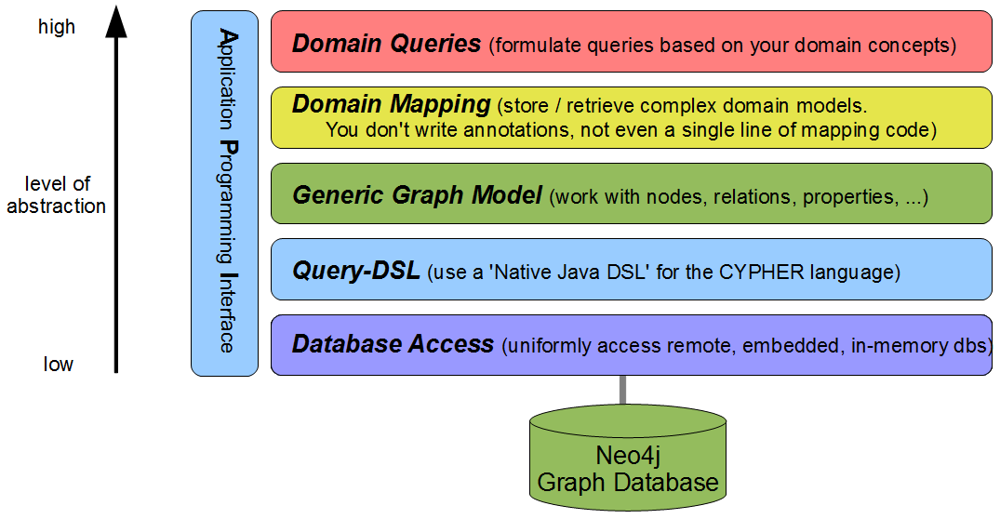

| by |
|||
| Java access to Neo4j™ databases at different levels of abstraction. | |||
| "focus on your domain model, not on how to map it to a database." | |||
|
Please start with the
Documentation JCypher is available On Maven Central For JCypher there exists a Samples Project Please also have a look at Neo4j |
 |